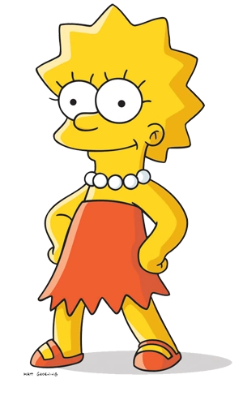

The Simpsons

The Simpsons (often shortened to Simpsons) is an American animated sitcom created by Matt Groening for the Fox Broadcasting Company. The main characters are a satire of a working-class family, consisting of Homer, Marge, Bart, Lisa, and Maggie. The series lampoons many aspects of American culture, society, politics, and history.
Homer

Homer Jay Simpson (born May 12, 1956)[36] is the main protagonist of The Simpsons series (or show). He is the spouse of Marge Simpson and father of Bart, Lisa and Maggie Simpson. Homer is overweight (said to be ~240 pounds), lazy, and often ignorant to the world around him. Although Homer has many flaws, he has shown to have great caring, love, and even bravery to those he cares about and, sometimes, even others he doesn't. He also serves as the main protagonist of the The Simpsons Movie.
-
“Whatever, I'll be at Moe's.”
-
“Better them than me.”
-
“Better them than me... Oh wait, that was me.”
Bart

Bartholomew "Bart" Jojo Simpson (born April 1[7] or February 23[8]) is the mischievous, rebellious, misunderstood, disruptive and "potentially dangerous" oldest child of the Simpson family in The Simpsons. He is the only son of Homer and Marge Simpson, and the older brother of Lisa and Maggie. He also has been nicknamed "Cosmo", after discovering a comet in "Bart's Comet". Bart has also been on the cover on numerous comics, such as "Critical Hit", "Simpsons Treasure Trove #11", and "Winter Wingding". Bart also has a 100-issue comic series entitled the Simpson Comics Presents Bart Simpson. Bart is loosely based on Matt Groening and his older brother, Mark Groening.
- “Ay Caramba!”
- “Eat my shorts!”
- “Don't have a cow, man.”
Lisa

Lisa Marie Simpson (born May 9)[9] is the elder daughter and middle child of the Simpson family and one of the two tritagonists (along with Marge,) of The Simpsons series.
- “If anyone wants me, I'll be in my room.”
- “The truth must be told.”
- “I hope these are recyclable.”